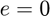
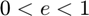
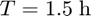
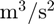
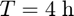

T2a
Semi-major axis from orbital period.
Contents
Syntax
a = T2a(T,mu)
Inputs
| Variable | Symbol | Description | Format | Units |
| T | orbital period | 1×1 double |
s | |
| mu | standard gravitational parameter | 1×1 double |
m3/s2 |
Outputs
| Variable | Symbol | Description | Format | Units |
| a | semi-major axis | 1×1 double |
m |
Note
- This function is only valid for circular () and elliptical () orbits.
Example #1: Orbit around the Earth.
Find the semi-major axis for an orbit around the Earth with orbital period .
Defining the orbital period in seconds,
T = 1.5*3600;
Standard gravitational parameter of the Earth (in ),
mu = MU_EARTH;
Finding the semi-major axis in meters,
a = T2a(T,mu);
Converting the semi-major axis to kilometers,
a = 0.001*a
a =
6.652555699658549e+03
Example #2: Orbit around the Moon.
Find the semi-major axis for an orbit around the Moon with orbital period .
Defining the orbital period in seconds,
T = 4*3600;
Standard gravitational parameter of the Moon (in ),
mu = MU_MOON;
Finding the semi-major axis in meters,
a = T2a(T,mu);
Converting the semi-major axis to kilometers,
a = 0.001*a
a =
2.953043278119479e+03